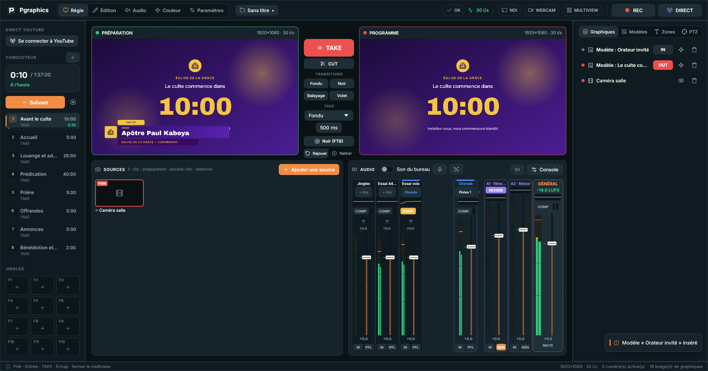
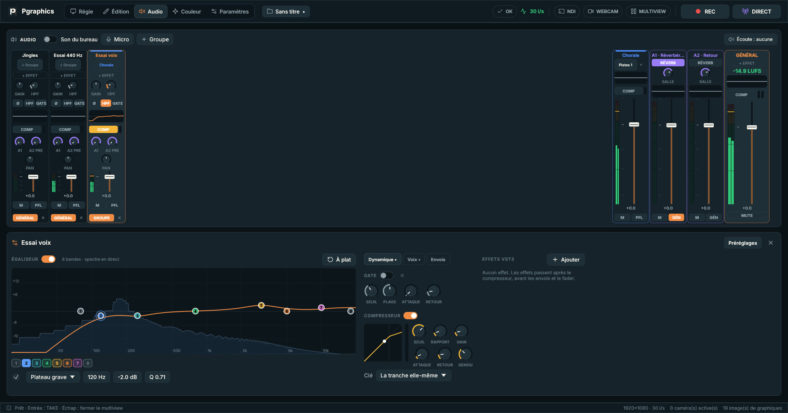
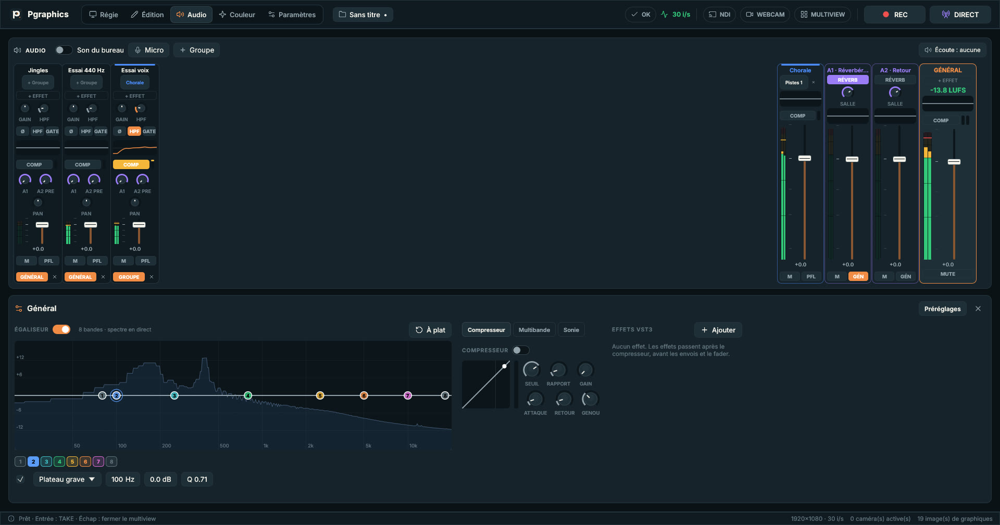
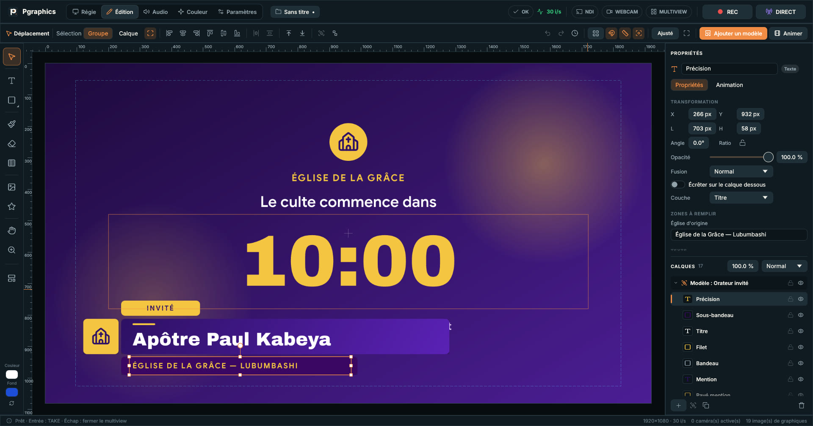

Préparation et programme
PVW / PGM comme en régie télé, TAKE et CUT, quatre transitions rapides, stingers, fondu au noir, multiview et projecteurs sur un second écran.
Studio de diffusion pour cultes et concerts
Une régie vidéo, des graphiques animés, une console de son professionnelle et le direct sur YouTube, dans un seul logiciel Windows. Vous préparez en PVW, vous envoyez à l'antenne avec TAKE, vous enregistrez et diffusez en même temps.
Gratuitversion 0.3.1 · Windows 10 / 11 · toutes les fonctions

Démonstration
Filmé tel quel dans Pgraphics 0.3.1 : le conducteur du culte, un orateur invité préparé en PVW puis envoyé avec TAKE, les transitions, le multiview, la console audio et son spectre en direct, la page Édition et le fondu au noir.
Fonctions
Réécrit de zéro en application native : plus rapide, plus stable sur un ordinateur modeste, pensé pour des bénévoles qui ont peu de temps pour apprendre.
PVW / PGM comme en régie télé, TAKE et CUT, quatre transitions rapides, stingers, fondu au noir, multiview et projecteurs sur un second écran.
Caméras, vidéos, images, NDI, capture d'écran ou de fenêtre, flux réseau (RTSP, SRT, RTMP, HLS), pages web, PowerPoint diapositive par diapositive, incrustation et couches.
Égaliseur 8 bandes sur spectre en direct, gate, expandeur, de-esser, compresseur à clé externe, multibande, réverbération à types, delay, sous-groupes et effets VST3.
Connectez votre chaîne une fois : vos diffusions apparaissent dans la Régie, vous choisissez à l'avance celle du dimanche, et Pgraphics affiche la santé du flux et les spectateurs. La connexion du compte arrive avec la prochaine mise à jour (validation Google en cours).
Débit adaptatif sans coupure sur un réseau lent, reconnexion automatique, YouTube, Facebook et SRT en même temps, enregistrement à côté.
Les moments du culte et leurs durées, avance ou retard d'un coup d'œil, gestes automatiques, jingles sur F1–F12 qui baissent les micros.
Église et concert en quatre styles (lumière, pourpre et or, minimal noir, terre d'Afrique), réseaux sociaux et fin de programme, avec zones à remplir.
Calques, 16 modes de fusion, masques, styles de calque, pinceau et dégradés ; entrées, sorties, boucles et images clés sur une ligne de temps.
Vérification avant de partir, santé du direct, copie de secours et reprise après plantage, étalonnage des couleurs avec scopes.
Page Régie
À gauche le conducteur et les jingles, au centre ce que vous préparez (PVW) et ce qui est à l'antenne (PGM), dessous les sources et le son. Rien ne change à l'antenne avant TAKE.
Page Audio
Chaque tranche a son traitement, et vous voyez ce que vous faites : la courbe de l'égaliseur se dessine sur le spectre du son en direct.

Général
Des sous-groupes comme sur une console d'église (chorale, musiciens, orateurs), des bus d'effets avec réverbération à types et delay au tempo, puis le Général avec son multibande et son limiteur de sécurité.

Page Édition
Un éditeur complet : calques, groupes, modes de fusion, masques, zones à remplir. Un modèle inséré en groupe se déplace et s'agrandit d'un bloc.

Caractéristiques
FAQ
Non. Pgraphics enregistre, diffuse vers YouTube, Facebook ou tout serveur RTMP / SRT, mélange le son et sort en NDI ou sur un second écran, tout seul.
Dans Paramètres ▸ Diffusion, cliquez « Se connecter à YouTube » : la page de Google s'ouvre dans votre navigateur (Pgraphics ne voit jamais votre mot de passe). Vos diffusions apparaissent ensuite dans la Régie. « Déconnecter » retire l'accès à tout moment. Cette connexion arrive avec la prochaine mise à jour, une fois la validation de Google terminée ; d'ici là, diffusez sur YouTube avec une clé de flux (Paramètres ▸ Diffusion ▸ + YouTube).
Oui : toutes les fonctions, sans limite de durée, sans clé et sans filigrane. Ce site est financé par la publicité.
Oui, sauf bien sûr pour le direct : régie, graphiques, son, enregistrement et sorties fonctionnent sans connexion.
Cliquez sur « Informations complémentaires » puis « Exécuter quand même ». C'est normal pour un logiciel d'un jeune éditeur.
Les versets et les paroles de chant sont laissés au logiciel fait pour ça, comme Project-On (gratuit), qui les envoie dans votre mélangeur à côté de Pgraphics.
Pgraphics tient la régie, les graphiques et le son ; Project-On affiche la Bible et les cantiques. Les deux sont gratuits.